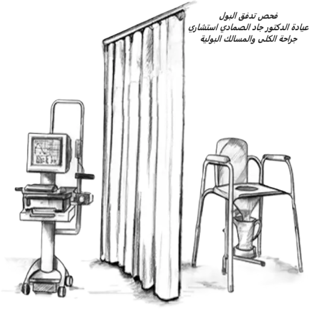

فحص تدفق البول / uroflow test
فحص تدفق البول هو إجراء تشخيصي يستخدم لقياس معدل التدفق على الوقت للتحقق من وجود مشاكل في المسالك البولية. الاختبار مباشر وغير تداخلي؛ يقيس مدى سرعة تدفق البول، وكمية تدفق البول، والوقت الذي يستغرقه. يستخدم أخصائي الكلى والمسالك هذا الاختبار لتأكد من وجود ضعف في تدفق البول، وما اذا كانت قوة الدفع طبيعية أم لا، ووظيفة العضلة العاصرة أو الصمام، ومشاكل البروستات، ومشاكل المثانة. و من المهم التنويه إلى أن فحص تدفق البول قد يكون جزءاََ من تخطيط المثانة ← ( فحص ديناميكية المثانة ). و قد يتم إجراؤه بشكل منفصل؛ وتبرز أهمية الفحص بشكل أساسي، عند اللجوء إليه بشكل منفصل، عندما يتم إجراء قراءة أولية قبل البدء بعلاج مشكلة معينة، مثل تضخم البروستات الحميد، ثم إعادة القراءة بشكل دوري لمتابعة التحسن على العلاج.
لماذا قد أحتاج إلى اختبار تدفق البول؟

الحالات التي يمكن أن يساعد قياس تدفق البول في تشخيصها:
- تضخم البروستاتا الحميد، أو تضخم غدة البروستات، والتي يمكن أن تسد مجرى البول تماما.
- سرطان المثانة.
- سرطان البروستاتا.
- انسداد المسالك البولية.
- أي خلل وظيفي في المثانة.
- مشاكل إفراغ المثانة بشكل كامل.
- المثانة العصبية.
- مشاكل المثانة الناجمة عن أمراض الجهاز العصبي مثل ورم الحبل الشوكي أو إصابات العمود الفقري.
كيف يمكنني الاستعداد لإجراء فحص تدفق البول؟
يكون قياس تدفق البول أكثر فاعلية عندما تكون المثانة ممتلئة. لا تتبول لمدة ساعتين على الأقل قبل الفحص.
ما هي مخاطر أو مضاعفات فحص التدفق؟
الفحص آمن جداََ وليس له آثار سلبية على المرضى لأن قياس تدفق البول هو علاج غير تداخلي ولا يتطلب وجود قسطرة للمثانة.
ما الإحتياطات التي يستحب الإلتزام بها ما بعد فحص تدفق البول؟
بعد الخضوع لاختبار قياس تدفق البول لا تكون هناك حاجة عادة لأي شكل خاص من أشكال الرعاية اللاحقة.
الخلاصة
فحص تدفق البول هو فحص مهم جداً يمكن أن يساعد في تشخيص العديد من امراض ومشاكل المسالك البولية. كما أنه عامل مساعد مهم جداً في متابعة تطور بعض أمراض المسالك البولية حيث يمكن معرفة استجابة المريض للعلاج من خلال هذا الاختبار، ويمكنه أيضاََ تنبيه طبيب المسالك البولية إلى المرضى الذين يحتاجون إلى فحوصات أكثر تَوَغُّلا.
قائمة المراجع:
- Gammie A, Rosier P, Li R, Harding C. How can we maximize the diagnostic utility of uroflow?: ICI-RS 2017. Neurourol Urodyn. 2018 Jun;37(S4):S20-S24. doi: 10.1002/nau.23472. Epub 2018 Jan 9. PMID: 29315791.
- Rosier PF, de Ridder D, Meijlink J, Webb R, Whitmore K, Drake MJ. Developing evidence-based standards for diagnosis and management of lower urinary tract or pelvic floor dysfunction. Neurourol Urodyn. 2012 Jun;31(5):621-4. doi: 10.1002/nau.21253. Epub 2012 Mar 6. PMID: 22396134.
- Schäfer W, Abrams P, Liao L, Mattiasson A, Pesce F, Spangberg A, Sterling AM, Zinner NR, van Kerrebroeck P; International Continence Society. Good urodynamic practices: uroflowmetry, filling cystometry, and pressure-flow studies. Neurourol Urodyn. 2002;21(3):261-74. doi: 10.1002/nau.10066. PMID: 11948720.
- Haylen BT, de Ridder D, Freeman RM, Swift SE, Berghmans B, Lee J, Monga A, Petri E, Rizk DE, Sand PK, Schaer GN; International Urogynecological Association; International Continence Society. An International Urogynecological Association (IUGA)/International Continence Society (ICS) joint report on the terminology for female pelvic floor dysfunction. Neurourol Urodyn. 2010;29(1):4-20. doi: 10.1002/nau.20798. PMID: 19941278.
- Reynard JM, Peters TJ, Lim C, Abrams P. The value of multiple free-flow studies in men with lower urinary tract symptoms. Br J Urol. 1996 Jun;77(6):813-8. doi: 10.1046/j.1464-410x.1996.00097.x. PMID: 8705213.